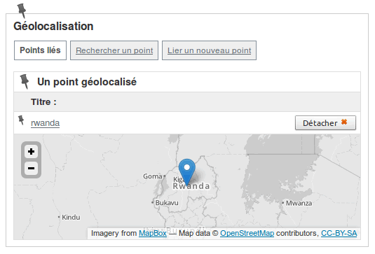

Cartographie avec SPIP
Bruno Bergot
b_b@spip - brunob@github - bruno@eliaz.fr
SPIP
- Système de publication pour l’Internet
- Fonctionnement collectif
- Multilinguisme
- Distribué sous la licence GNU/GPL
- Né en 2001, utilisé sur plus de 40 000 sites
http://www.spip.net/
GIS
- Un plugin pour SPIP
-
Développé sur l'espace collaboratif (la zone)
- À ce jour, 725 commits sur le projet
- Effectués par plus de 40 personnes
- Distribué sous la licence GNU/GPL
- Né en 2007, utilisé sur environ 2 700 sites
http://plugins.spip.net/gis.html
GIS 1.0 (2007)
- Développé par Berio et Horacio du projet escoitar.org
- Maintenu par b_b et kent1
- Utilise l'API Google Maps v2 ou OpenLayers
- Permet de géolocaliser les articles de SPIP
- Superposition de fichiers KML
- Geocoding + Reverse Geocoding
http://contrib.spip.net/Plugin-Gis-escoitar
GIS 2.0 et 3.0 (2011)
- Développé par b_b et kent1
- Utilise l'API Mapstraction
- Permet de géolocaliser tous les objets de SPIP
- Chaque point dispose d'un titre, un descriptif et un logo personnalisable
- Un point peut être lié à plusieurs objets
http://contrib.spip.net/GIS-2-GIS-3
GIS 4.0 (2012)
- Développé par b_b et kent1
- Utilise l'API Leaflet
- Encore plus modulaire : utilsiation de librairies externes
- Ne nécessite plus de scripts externes
- Plus de 25 fonds de carte différents (la plupart basés sur les données OSM)
- Le geocoder utilise Nominatim
- Superposition de fichiers GPX et GeoJSON
- Nouvelles fonctionnalités : clustering, plein écran, etc.
http://contrib.spip.net/GIS-4
Et comme très souvent chez SPIP...
la compatibilité ascendante est assurée :)
Localisation des objets depuis l'interface privé de SPIP.

Pour chaque objet, on peut :
- gérer la liste des points liés à l'objet en cours
- recherhcer un point existant pour le lier à l'objet
- créer un nouveau point et le lier à l'objet
Insérer une carte dans un squelette :
[(#INCLURE{fond=modeles/carte_gis,
zoom=8,
limit=100,
scale=oui})]
Autre exemple :
[(#INCLURE{fond=modeles/carte_gis,
objets=articles,
id_rubrique=2,
zoom=7,
lat=48.21437896,
lon=-4.54370498,
kml=2})]
- afficher les articles
- de la rubrique n°2
- définir le zoom de la carte à 7
- centrer la carte sur les coordonnées 48.21437896 / -4.54370498
- superposer le KML correspondant au document n°2
Boucles et balises
Dans une boucle GIS :
- on peut utiliser les balises :
#ID_GIS #TITRE #DESCRIPTIF #LAT #LON #ZOOM
- si le geocoder est actif :
#ADRESSE, #PAYS, #CODE_PAYS, #REGION, #VILLE, #CODE_POSTAL
- et des critères :
{gis} {gis distance} {distancefrom}
Performances & maintenabilité
- les scripts nécessaires ne sont appelés que lorsqu'une carte est présente dans la page (source)
- la plupart des fonctionnalités reposent sur des librairies externes
- le plugin utilise L.Map.Gis qui étend L.Map de Leaflet
Les points c'est bien, mais il n'y a pas que ça dans la vie...
GIS Geometries
- une extension du plugin GIS
- ajoute la possibilité d’afficher et d’éditer des formes géométriques (polyline, polygon)
- création d'objets par tracé ou par import de fichiers (GPX/KML)
- utilise les librairies Leaflet Draw et geoPHP
Compatible MySQL 4.1 mini, pas de support SQLite pour l'instant.
Enrichit le formulaire d'édition de GIS.
Ajoute la possibilité de télécharger les objets
au format GPX/KML.